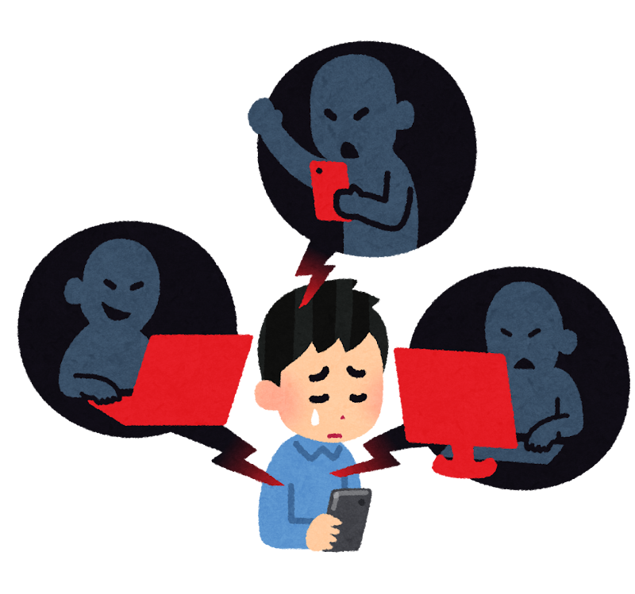

授業編 ２. 導入
この記事は執筆途中です。
1 導入の目的
1.1 目的
授業の導入の目的は次の通りです。（主語は生徒）
- 興味を持てるようにする。
- 展開で思考活動をする上でエンジンがかけられるようにする。
- 今日の授業の見通しを持てるようにする。
- 疑問を生み出し、主体的に授業に取り組めるようにする。
- 前時の内容の想起および「分野別必須事項」の確認
授業は導入で決まります。何事も最初が肝心。
教員養成課程においては、１番の「興味を持てるようにする。」ことが目的とされがちです。 興味を持たせることは大切ですが、導入のたった５分だけで35人全員に興味を持たせるのは難しい。興味など５分で生まれるわけがありません。 政治に興味がない人間に、国会内部には氷嚢があって、空調の役割を果たしていたとかどうこうのこうのと説明しても、眠くなるだけです。
でも、４番の「疑問を生み出す」ことができれば、完全に興味を持たせることができなくても、授業に主体的に取り組むことにつながります。それは結果的に興味を持つきっかけになり得ます。
また、授業の展開で思考活動をする上でエンジンがかけられるようにすることも重要です。導入で生徒の思考を動かすことができれば、展開での思考活動が活発になります。導入では、生徒に議論や交流・発表ができる時間を設けることが重要です。
1.2 時間配分
一般的に社会科の授業の導入の理想は５分と言われています。 なぜなら、後ろにやることが山積みだからです。 導入に10分も15分もかけてしまうと、展開での思考活動の時間が削られてしまいます。
導入は、５分で終わらせることを目標にしましょう。ただし、導入の目的を達成するために必要であれば、10分程度かけても構いません。全体の構成を見て決めましょうね。
2 導入の流れ
2.1 前時の想起
まずは、前時の内容を想起できるようにしましょう。
前時の内容を想起させることの目的は、本時で前時の内容を活用できるようにするためです。 生徒が社会的な見方・考え方として、既習事項を活用することが示されています。生徒は復習しないと、本時で使おうという発想が出てきません。ここであらかじめ伏線を張っておくと、生徒は意外にも前時の内容を活用してくれます。
2.2 「分野別必須事項」の確認
これは筆者が勝手に作った言葉ですが、社会科の授業の導入では、地理・歴史・公民の各分野において必ず押さえておくべき導入の必須事項があります。 これを私は勝手に「分野別必須事項」と呼んでいます。（通じないんで、ほかでは使わないでネ。）
これは、地理・歴史・公民の各分野のすべての授業でも導入でやるべきことです。
| 分野 | 分野別必須事項 | 目的 |
|---|---|---|
| 地理 | 地図帳を用いて今日やる場所を確認する | 今どこの話をしているのかを把握すると共に、地図の見方やどの国がどこにあるかを理解する |
| 歴史 | 年表で前時やったところと本時でやる時代を示す | 時代の流れを把握し、今どの時代をやっているのかを明確にする |
| 公民 | 日常とつなげる | 日常生活と社会の問題を結びつけて理解することで、身近な出来事であることを理解できるようにする |
全て社会的な見方・考え方を育むうえで重要な隠し味です。生徒の理解を促します。また、毎回することで、反復ができますので、地図の見方なんかは確実に習得ができます。
前時の想起と「分野別必須事項」の確認は、同時に行うこともできます。 例えば、地理の授業で…
韓国のことを本時やるとすると、前時の「アジア州をながめて」でやったアジア州の範囲はどこかを隣同士で確認し、場所をなぞらせる。
これは、前時やった「アジア州の場所の確認」と「今日やる韓国の場所の確認」を同時に行うことができます。
教育基本法で、教育は政治的中立が求められています。 特に公民の導入をする際、日常生活とつなげることになりますが、政治的中立を意識して行う必要があります。
あまりに新しい時事問題（特に憲法や政治問題）を扱うと、どうしても政治的中立が保てなくなる可能性がありますので要注意です。
2.3 疑問を生み出す
前頁（１. 授業の構成を考える）で述べたように、授業の構成として 「生徒が生み出した疑問を本時の目標とし、その疑問を資料などを読み解きながら生徒の力で解決する」授業を目指します。
この授業構成を実践するためにも、教員が生徒から出る疑問を想定し、その疑問を生み出すような導入をすべきであることがわかります。（このやり方が正しいのかは議論の余地があるが、少なくとも先生側から疑問を提示するやり方よりはマシ）
疑問を生み出す過程で、周りと交流したり、思考する時間を取れば、生徒のエンジンはかけられます。
では、疑問を生み出す導入をするにはどうすればよいか。
疑問を生み出すためには…
生徒に「え！？」という驚きを与える
ことが必要です。授業で使えるテクニックをご紹介しましょう。
2.3.1 写真を比較する
例えば、地理で中国の授業をするとしましょう。
以下の資料は、中国・上海の1987年と現在の上海の写真です。

この２つの写真を提示し、「気づいたことや、疑問に思ったことは何か」を生徒に投げかけよう。
生徒は、社会的な見方・考え方「比較」を活用して、どこがどう変わったかを発表してくれます。
手前側の街は大きく変わっていないけれど、奥は凄く発展したことに気づきました。
昔は高層ビルがなかったけど、いまは凄く発展して高層ビルがたくさんできたと思います。なんでこんなに発展したのか疑問に思いました。
こんな感じで疑問が出ます。この疑問を本時の目標にしましょう。
目標：中国はどのように発展したのだろう。こんな感じです。
2.3.2 資料の出す順番や出し方を工夫する
資料を出す順番や出し方を工夫しましょう。これはＩＣＴを活用すれば簡単ですね。
例えば、世帯数の変化を見るとき…

このように資料の一部を隠し、このあとどうなるか予想を立てる時間を取ります。
増えていくんじゃないか。
いや減っていくのでは？
結果を見せましょう。

ここから「気づいたことや疑問に思ったことは何か」を問います。そうすると、疑問がわくはずです。
生徒に「え！？」という驚きを与えるように意識しましょう。
2.3.3 既習事項との違いから疑問を探す
既に前回やった資料を用い、復習を行います。
その後、既習内容と異なる事象を提示します。そこで意識のずれが生まれ、疑問点が生まれます。
いわゆる例外的な事象に使えるテクニックです。
例えば、公民科「公共の福祉」について…
| テクニック | 内容 |
|---|---|
| 前時の復習 | ・「これまでやってきた人権挙げてみてー！」と問う ・自由権、社会権、参政権などが出てくる ・言論の自由があることを確認する。 |
| 異なる事象を提示する | ・じゃあさ、この絵（誹謗中傷を書き込む生徒の絵）見てよ。 ・これやっていいんですかね？ ・だめ！人を傷つけてしまう。 でも言論の自由があることを示す ・我々には言論の自由がありますが、これを使うと人を傷つけてしまう。さあ、どうしようか？（予想を立てる） |
